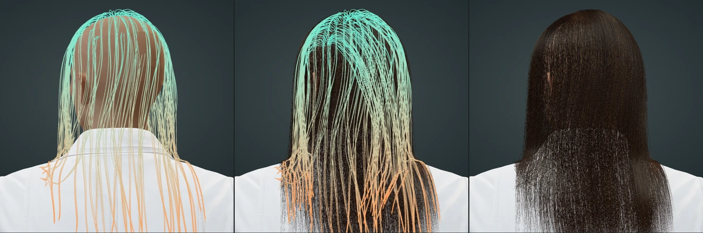

GTA头发如何制作
目录

切换「游戏原始引导丝」和「动态模拟」，对照 192 根引导丝和插值后的披发。
这份 GTA VI 披发样本里，一根引导丝从发根到发梢有 35 个点，整头一共 192 根。转头时，先解这 6,720 个点怎么动，再在引导丝之间插出可见的细丝。
GPU 怎么算头发运动
我们回放这束头发时，GPU 的计算分成两步。先逐点处理速度和碰撞，再沿每根引导丝修正相邻两点的距离。
取相邻两点的位置 ，记它们静止时相距 。段长约束和需要消掉的拉伸量可以写成
如果这段原长 10 mm，转头后两点相距 12 mm，就沿着 的方向收回 2 mm。修正只沿这段的方向做，发束仍然可以弯。
本页 Demo 把引导丝放在 CPU 上，用带阻尼的 Verlet 积分预测位置。 是当前加速度， 秒。每一步先算下式，再做五轮段长和碰撞修正。
侧风拉满时，两点可以分别从耳朵两边绕过去，连线却从耳朵里面穿过去。所以头部碰撞还要检查整段发丝。把引导点转回头部坐标，在头模的皮肤三角形上求交。设交点为 ，朝外的单位法向为 。当 ，点已经到了皮肤内侧，要把它推回去。
GPU 怎么画出细丝
每根可见发丝存两项重心权重，第三项用 补出来。取三根引导丝上相同编号的点 ，Demo 在顶点着色器里算出细丝上的第 个点
从根到梢都用同一组权重。比如第一根占一半，只把它的第 17 个点往右挪 8 mm，细丝在这里就跟着挪 4 mm。换一组权重，就得到另一根细丝。头顶另外铺一层贴着头皮的短发，沿发缝两侧各自的走向排。转头时这层跟着头皮走，侧风能吹开外面的长发，发根处还留着一条细缝。
中心线还没有宽度。我们在顶点着色器里用相邻点求切线，再沿横向把中心线展开。记单位横向量为 ，半宽为 ，左右两个顶点就是
把相邻两对顶点连成两个三角形，就是一段可以光栅化的发丝。这个 Demo 默认画 32,768 根，参与物理求解的还是那 192 根。
模拟一步花多久
我们单独测了 GPU 物理求解器。单人披发，192 根引导丝，连续跑 32 步，用总耗时除以 32。测了 12 组，每步耗时的中位数是 0.04 毫秒出头。